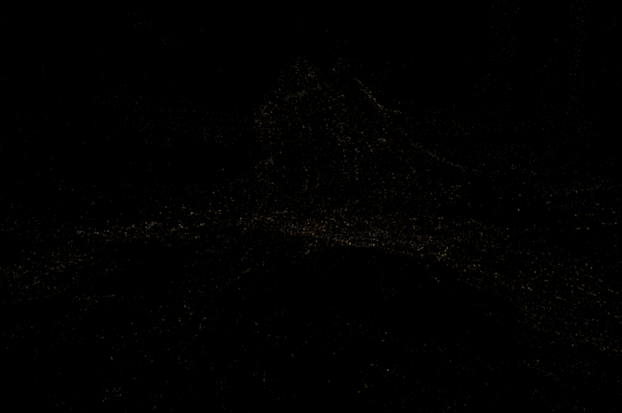
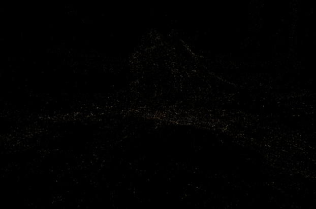

Atomized Proliferation
When handling input SfM points, 3DGS alternates between densification and optimization to enhance scene representation. In contrast, our method initially constrains Gaussians that represent fine details into Atom Gaussians and prioritizes their proliferation to quickly align with the scene's inherent geometry.
Drag the slider to play with proliferation! Also drag the comparison bar to see differences.
Iteration: 10
 
